Google Play Books
GitHub 應用實戰
不只版本控制的 12 種工作流：從專案管理、文件網站、GitHub Actions 到 AI 協作，打造個人與團隊的數位工作平台

付費購買公開連結待確認GitHub / 版本控制 / AI 協作
GitHub 應用實戰：不只版本控制的 12 種工作流：從專案管理、文件網站、GitHub Actions 到 AI 協作，打造個人與團隊的數位工作平台
不只版本控制的 12 種工作流：從專案管理、文件網站、GitHub Actions 到 AI 協作，打造個人與團隊的數位工作平台
《GitHub 應用實戰》是 Happy eBook 整理於 Google Play Books 的電子書作品，主題屬於「GitHub / 版本控制」。本頁提供書名、作者、分類、定價與 Google Play Books 搜尋入口，方便讀者與站務管理者快速找到對應作品。